App Review System
Workflow system for reviewing apps before marketplace listing
Wix App Market’s internal review platform is the tool Account Managers use to evaluate and approve apps submitted to the marketplace. As the team scaled, Account Managers began bypassing the old tool in favor of Google Docs and Slides for their actual review work, a clear signal that the platform wasn’t meeting their needs.
I started with discovery research to identify the root pain points, then led a full redesign: updating the UI to Wix Design System, restructuring the information architecture for organizational scale, and introducing an integrated review workflow with in-platform commenting and report submission.
Before launch, I facilitated a bug hunt session with Account Managers to validate the experience and surface edge cases. The result was a tool the team still uses and improves today - reducing reliance on external workarounds and consolidating the review process into a single, purpose-built platform that could grow with the organization.
What I Did
- Conducted discovery research to identify pain points causing Account Managers to use external tools
- Redesigned the platform’s UI aligned to Wix Style React guidelines
- Restructured the system architecture to better support organizational scale
- Designed a new integrated review workflow enabling in-platform commenting and report submission
- Facilitated a bug hunt session with Account Managers to validate the redesign before launch
Impact
The tool is still actively used by Wix's Developer Relations team. It reduced account manager workload, shortened the review cycle, and made app evaluations faster and more consistent across the team.
At a glance: the four areas of the App Review System and what you can do in each

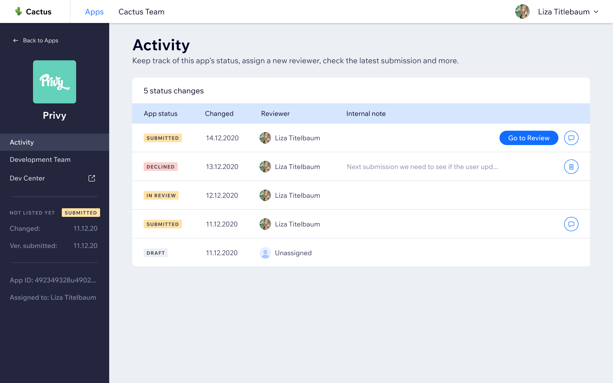
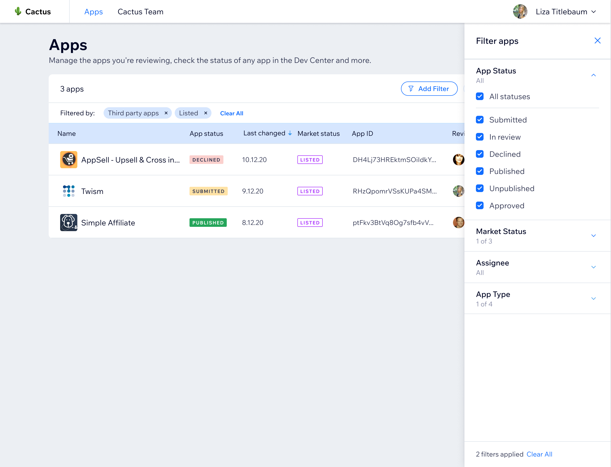

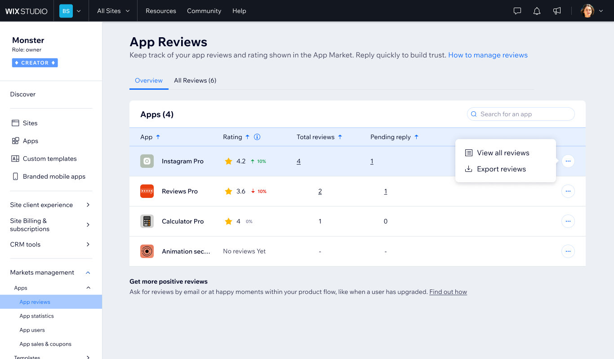
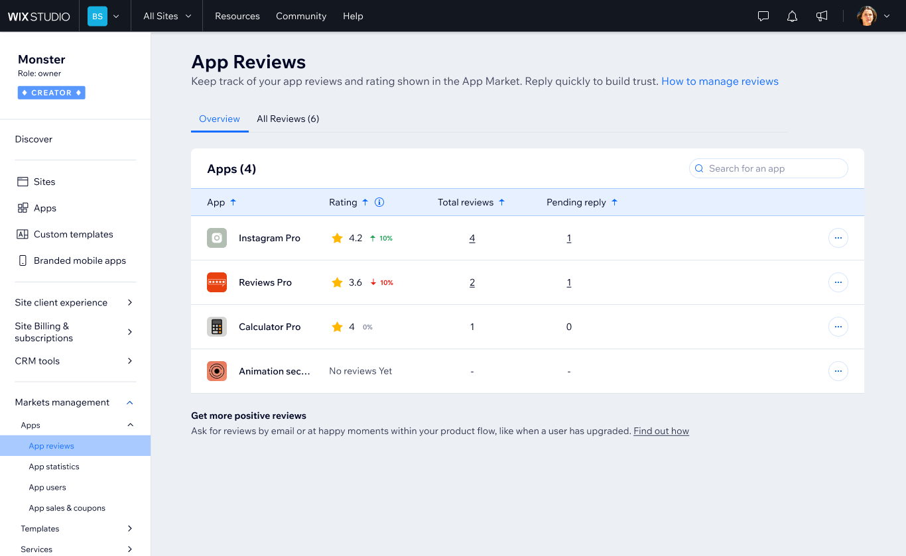


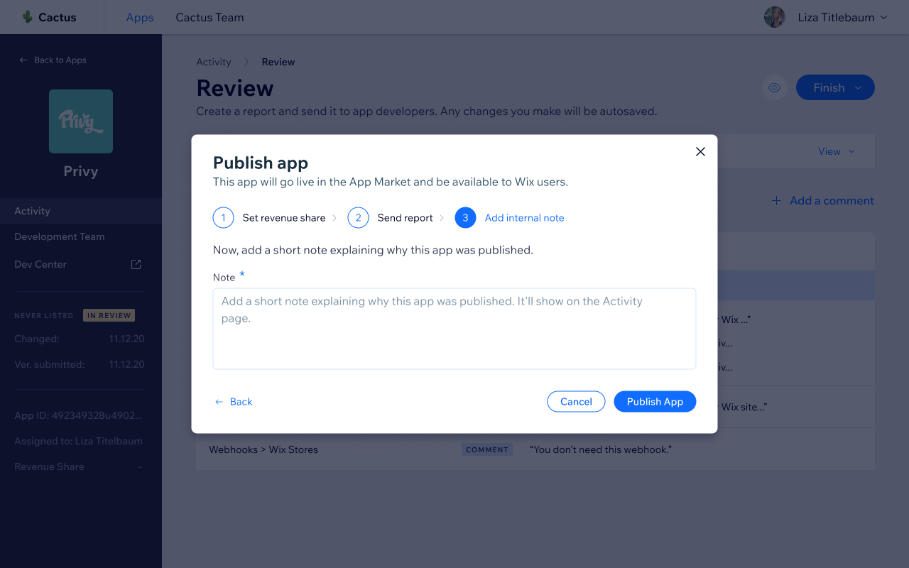


Publish flow
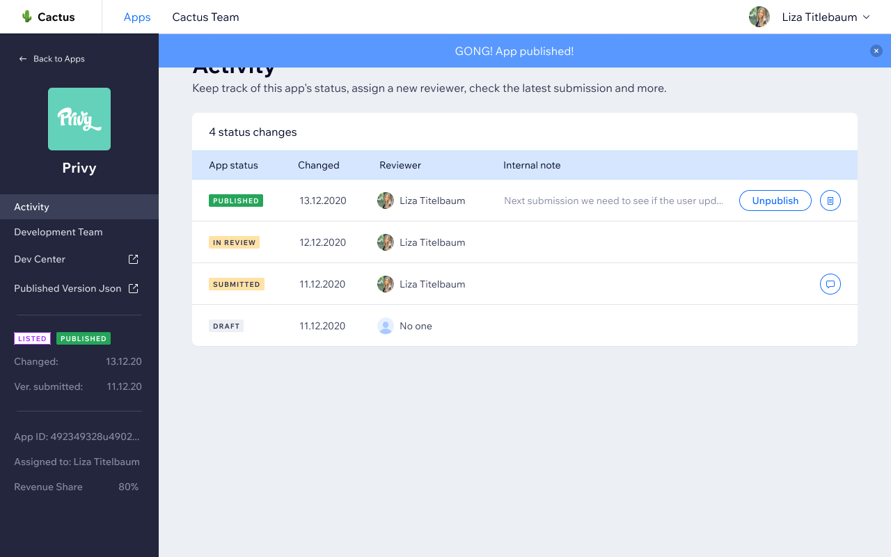

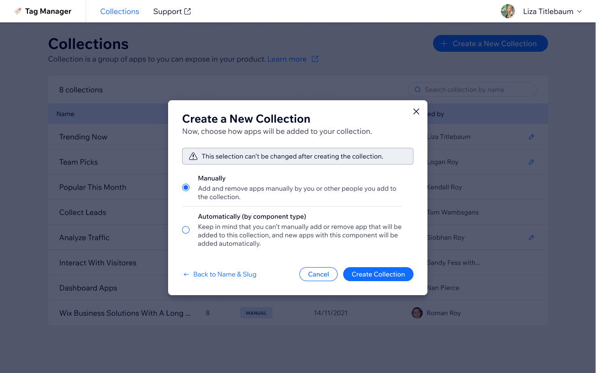
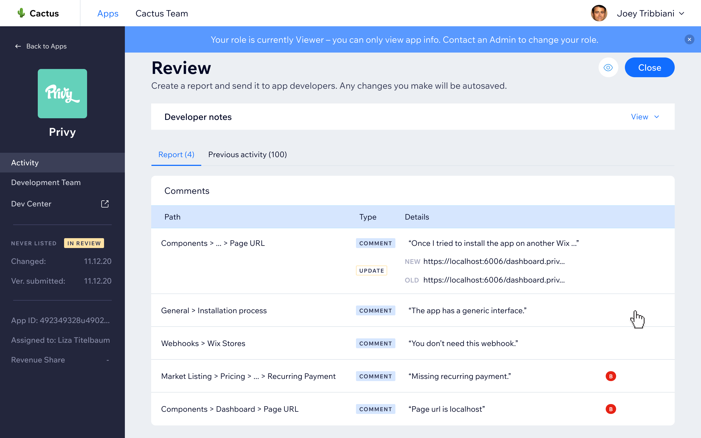
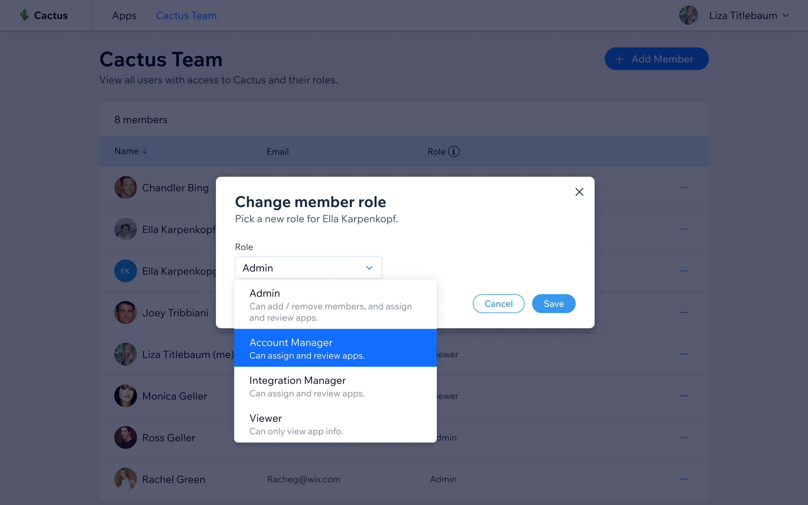

Team management and roles

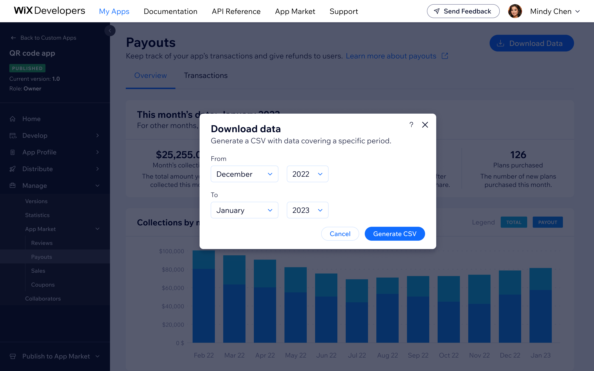
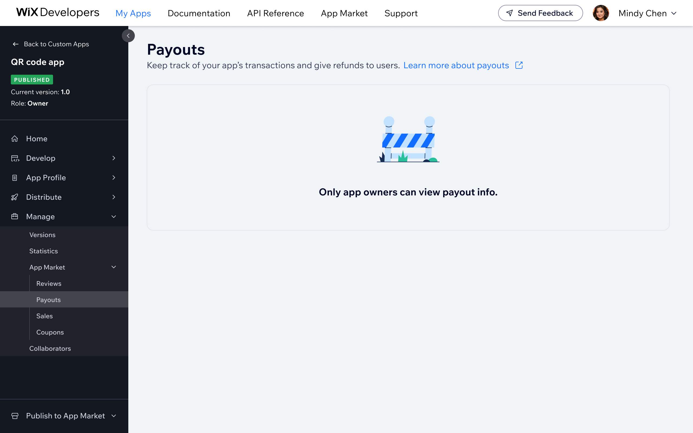
Bottom line
The most telling signal was that the team had already voted with their feet, doing the actual work outside the platform.
That meant success was not about launching a redesign; it was about building something good enough that they would stop reaching for Google Docs. The pre-launch bug hunt session was one of the more useful things I did on this project.